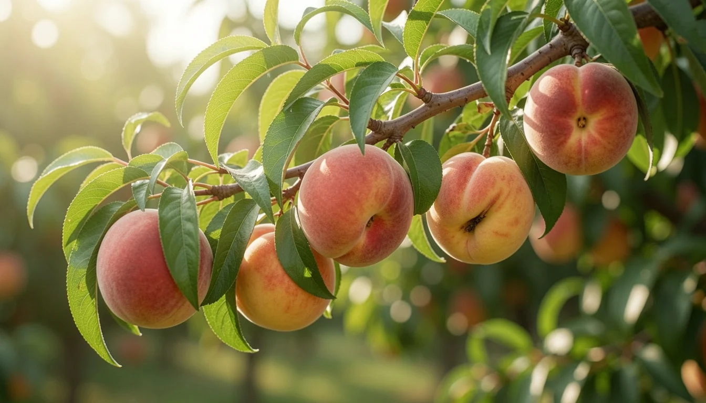

Meyveler lif, vitamin ve başka besin ögeleri sağlayan çeşitli gıdalardır. Sağlık etkileri meyvenin türüne, hazırlanışına, tüketim miktarına ve kişinin sağlık durumuna göre değişebilir. Bazı meyveler belirli ilaçlarla etkileşebilir veya özel sağlık koşullarında sakınca yaratabilir; tek bir meyve için herkese uygun bir yarar ya da risk genellemesi yapılamaz.
Bilimsel Olarak En Güçlü Antioksidan Kaynaklarından: Faydalı Meyveler
Yaban Mersini (Vaccinium myrtillus, V. corymbosum): Bu küçük meyve, antosiyaninler dâhil çeşitli bitki bileşikleri içerir. Bu bileşiklerin laboratuvar ve beslenme araştırmalarında incelenmesi, yaban mersininin insanlarda bilişsel gerilemeyi önlediğini veya tedavi ettiğini tek başına göstermez (Devore ve diğerleri, 2012; Annals of Neurology). Aynı zamanda LDL kolesterolünü düşürdüğü de kesinleşmiş bir tedavi etkisi olarak sunulmamalıdır.
Avokado (Persea americana): Orta Amerika kökenli bu meyve, doymamış yağlar dâhil çeşitli besin ögeleri içerir. Avokadonun tek başına HDL veya LDL düzeylerini belirli biçimde değiştirdiği ya da tansiyonu tedavi ettiği sonucuna varmak için bu besin içeriği yeterli değildir (Wang ve diğerleri, 2015; JAM). Enerji ve besin değerleri çeşide ve porsiyonun büyüklüğüne göre değişir; beslenme değerlendirmesi bütün diyet üzerinden yapılmalıdır.
Nar (Punica granatum): Nar, punikalajin gibi bitki bileşikleri içerir. Bu bileşiklerin klinik etkileri araştırılmış olsa da narın bağırsak mikrobiyomunu veya iltihabı klinik olarak iyileştirdiği kesinleşmiş değildir. Nar suyu üzerine sınırlı çalışmalar, tek başına hastalık riskini azalttığını kanıtlamaz (Aviram ve diğerleri, 2004; Clinical Nutrition). İlaç kullanan kişiler, nar veya suyunun ilaçlarıyla etkileşip etkileşmediğini hekim ya da eczacıya danışmalıdır.
Kivi (Actinidia deliciosa): Çin kökenli bu meyvenin farklı çeşitleri bulunur; besin içeriği çeşide ve yetiştirme koşullarına göre değişir. Kivi C vitamini ve aktinidin enzimi içerir; bu özellikler her bireyde aynı sağlık sonucunu doğuracağını göstermez. Uyku üzerine yayımlanmış küçük ölçekli bir çalışma, kivi tüketiminin uykusuzluk için kanıtlanmış bir tedavi olduğu anlamına gelmez (Lin ve diğerleri, 2011; Asia Pacific Journal of Clinical Nutrition).
Elma (Malus domestica): Elma lif ve çeşitli bitki bileşikleri içerir. Bu bileşiklerin varlığı, elma tüketiminin iltihabı azalttığını veya kolorektal kanseri önlediğini kanıtlamaz (Jedrychowski ve diğerleri, 2010; European Journal of Nutrition). Kabuk, lif ve başka bileşenler sağlayabilir; elmayı yıkayıp kabuğuyla tüketmek kişisel tercih ve toleransa bağlıdır.
Üzüm (Vitis vinifera): Farklı çeşitleri taze meyve, kuru üzüm ve başka ürünler olarak tüketilir. Kabuğunda bulunan resveratrol laboratuvar ve klinik araştırmalarda incelenmiştir; bu, üzüm veya şarabın kalp hastalığını önlediği anlamına gelmez. Alkol tüketiminin sağlık açısından koruyucu olduğu sonucuna varılamaz.
Belirli Koşullarda Dikkat Edilmesi Gereken ya da Zararlı Olabilecek Meyveler
Greyfurt (Citrus paradisi): Greyfurt, bazı ilaçlarla etkileşebilir. Etkileşimde CYP3A4 ve taşıyıcı proteinler gibi mekanizmalar rol oynayabilir; etkileşimin yönü ve önemi kullanılan ilaca ve kişiye göre değişir. Greyfurt bazı ilaçların kandaki düzeyini artırabilir, bazılarının emilimini ise azaltabilir; dolayısıyla bütün ilaçlar için tek bir mekanizma veya genel yasak yoktur (Bailey ve diğerleri, 1998; British Journal of Clinical Pharmacology). Reçete veya ilaç bilgilendirmesini kontrol edin; greyfurtun sizin ilacınızla etkileşip etkileşmediğini hekim ya da eczacıya sorun.
Ackee (Blighia sapida): Jamaika mutfağında tüketilen ackee meyvesinin olgunlaşmamış kısımları, hipoglisin A ve hipoglisin B gibi toksinler içerebilir. Yanlış hazırlanmış meyvenin tüketimi ciddi zehirlenmeye yol açabilir (Tanaka ve diğerleri, 1976; Science). Bu nedenle yalnızca olgunlaşmış, uygun biçimde hazırlanmış ve gıda güvenliği kurallarına uygun ürünler tüketilmelidir; meyvenin yenilebilir kısımlarını ayırt etmek için uzman olmayan kişilerin kendi başına karar vermesi güvenli değildir.
Star Elması / Carambola (Averrhoa carambola): Güneydoğu Asya kökenli bu meyve, kronik böbrek hastalığı olan kişilerde nörolojik zehirlenme riskiyle ilişkilendirilmiştir. Karamboksin ve oksalat gibi bileşenlerin etkileri nedeniyle böbrek işlevi bozulmuş kişiler yıldız meyvesini tüketmeden önce hekimlerine danışmalıdır; risk kişiye ve hastalığın durumuna göre değerlendirilir (Chang ve diğerleri, 2002; Nephrology Dialysis Transplantation).
Muz (Musa spp.): Muz, lif ve çeşitli besin ögeleri sağlayan bir meyvedir; besin bileşimi çeşide ve olgunluğa göre değişebilir. Diyabeti olan kişiler için meyvenin uygun miktarı genel bir yasakla değil, kişinin beslenme planı ve sağlık ekibinin önerisiyle belirlenmelidir. Muzun hipertansiyonu, kas kramplarını veya uyku sorunlarını tedavi ettiği iddia edilmemelidir.
Doğal Şekersiz Meyveler ve Aşırı Meyve Tüketimi: Serbest şeker içeren içecek ve yiyecekleri fazla tüketmek sağlık riskleriyle ilişkilidir; bu bulgular, bütün meyvenin aynı etkiye sahip olduğu anlamına gelmez. Dünya Sağlık Örgütü, 10 yaş üzerindekiler için günde en az 400 gram meyve ve sebzenin birlikte tüketilmesini önerir; bu miktar yalnızca meyveyi ifade etmez. Meyve suyu da serbest şeker içerebildiğinden bütün meyveyle aynı şekilde değerlendirilmemelidir (Ouyang ve diğerleri, 2008; Journal of Hepatology).
Bölgesel Dağılım: Hangi Meyve Nerede Yetişir?
Tropikal Kuşak: Mango, papaya, ananas, liçi ve başka meyveler tropikal bölgelerde yetiştirilir. Ancak türlerin dağılımını yalnızca enlem belirlemez; iklim, yükseklik, toprak, sulama ve tarımsal uygulamalar da etkilidir. Üretim sıralamaları yıla ve ürüne göre değişebileceğinden güncel tarım istatistikleri belirtilmeden ülke payı vermek doğru değildir.
Subtropikal Kuşak: Turunçgiller, incir, nar ve avokado gibi farklı ürünler subtropikal iklimlerde yetişebilir. Akdeniz havzası, Orta Amerika ve Doğu Asya'daki üretim koşulları ürün ve bölgeye göre değişir. Bir ülkenin dünya sıralamasını verirken ürün, yıl ve istatistik kaynağı birlikte belirtilmelidir.
Ilıman Kuşak: Elma, armut, şeftali, üzüm ve bazı küçük meyveler ılıman iklimlerde yetiştirilebilir. Türlerin doğal kökeni ile bugünkü üretim alanları aynı şey değildir; çeşit seçimi, iklim değişikliği ve tarım teknolojileri dağılımı etkiler.
Meyvelerin Besin Değerini Koruma
Dondurulmuş meyveler, ilave şeker içermedikleri sürece sağlıklı beslenmenin bir parçası olabilir; besin içeriği ürün ve saklama koşullarına göre değişir. Kurutma suyu azalttığı için aynı ağırlıktaki üründe şeker ve enerji daha yoğun olabilir. Meyve suyu, WHO'nun serbest şekerler kapsamında değerlendirdiği şekerler içerebilir; bu nedenle bütün meyveyle eşdeğer kabul edilmemelidir (Li ve diğerleri, 2017; Journal of Food Composition and Analysis).
“Doğa, zehiri ilacın yanına koymuştur. Bilmek, ikisi arasındaki farkı görmektir.” — Paracelcus, 1493–1541
Sonuç: Çeşitlilik ve Bilinç
Meyveler; milyonlarca yıllık evrimsel bir ilişkinin ürünü olarak insanlığın en değerli besin kaynaklarından biridir. Ancak her meyve, her birey için, her koşulda aynı şekilde faydalı değildir. Böbrek hastalığından ilaç kullanımına, diyabetten genetik yatkınlığa kadar pek çok faktör; hangi meyvenin ne kadar ve nasıl tüketileceğini belirler. Bilimsel okuryazarlık ve çeşitlilik, meyve tüketiminde temel rehberimiz olmalıdır.
Konunun devamı için Sebzeler: Faydalı ve Zararlı Özellikler yazımızı ve evrimsel arka plan için Sebze ve Meyvelerin Evrimi yazımızı okuyabilirsiniz.
Kaynaklar: World Health Organization, “Healthy diet” (2026); U.S. Food and Drug Administration, “Grapefruit Juice and Some Drugs Don’t Mix”; Bailey ve diğerleri, greyfurt-ilaç etkileşimleri, British Journal of Clinical Pharmacology (1998); Tanaka ve diğerleri, hipoglisini ve ackee zehirlenmesi, Science (1976); Chang ve diğerleri, carambola ile ilişkili nörotoksisite, Nephrology Dialysis Transplantation (2002); Ouyang ve diğerleri, fruktoz ve yağlı karaciğer hastalığı, Journal of Hepatology (2008).